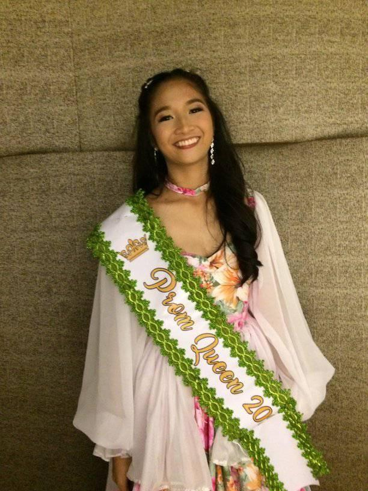

 In these days there are so many memories because I meet new people , get to know them, and became friends with them. We make memories throughout the years in Highschool, we play, laugh, have fun, and make a lot of bonds together. And we share our secrets to each other, and as the years past that we're near to our moving up, our bond become stronger. And we get to more to each other, but there are some ups and downs as we walk our the same path. Highschool days give me a lessons, challenges, and to have fun. And I'm so glad that I can experience JS Prom in my highschool days not just once but twice, and make memories together along with my classmates, friends, teachers, and schoolmates. Because of the memories that I made in Highschool will always in my mind and heart, and as we cross the same path with this people that I'm close with. Our bond together is the best like they said, Highschool life is fun and where you can find the best moments in our school days.